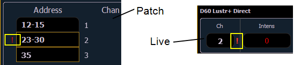
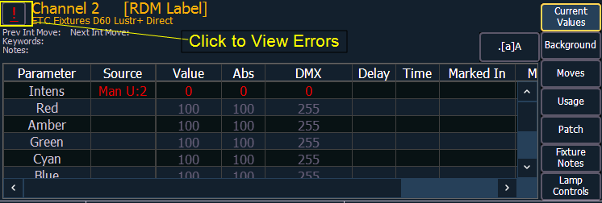
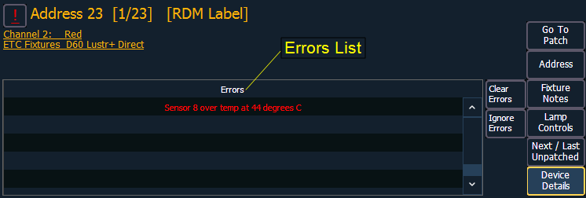

Errors and Warnings
One of the advantages of using dimmer and RDM feedback is error and warning reporting. If something happens with a patched and attached dimmer/ device, you will be notified in live, patch, and about.

Errors can be viewed in the About Channel and About Address displays.


The notifications you can see are:
- A red “!” means that the dimmer/ device has errors, such as overtemp, breaker trip, and lamp out.
- Yellow “?” means that the dimmer/ device has a warning message. Warning messages can include:
- Multiple devices’ addresses overlap
- Multiple devices or different devices at this address
- Patched fixture type mismatch
- Patched fixture address mismatch
- Offline